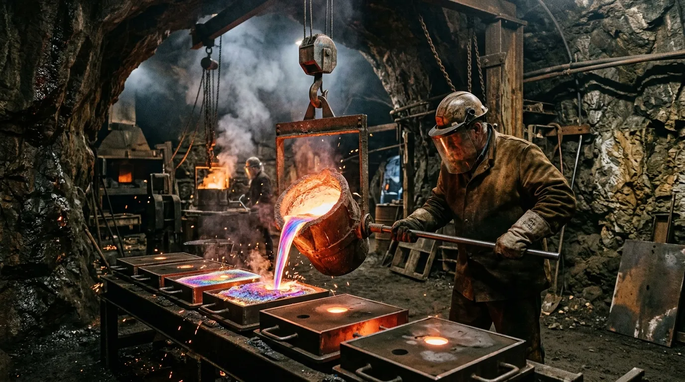

High-Purity Cast Bismuth for Sub-Micron Acoustic and Magnetic Isolation
Certified 99.995% diamagnetic bismuth-tin slabs engineered for extreme metrology and master turntable formwork.
Conventional lead and granite sub-bases suffer from internal resonance nodes and toxic handling constraints in high-precision laboratory environments. We cast ultra-dense bismuth alloy slabs that expand three point three percent upon solidification, locking internal crystal boundaries into a non-resonant monolithic mass. Every casting is poured in our sub-coastal Solway cavern and diamond-lapped to micron planarity before dispatch.
Examine Commercial StockThe Expansion Paradox: Why Solidifying Bismuth Neutralises Mechanical Vibration
Elemental bismuth is one of the few materials on the periodic table that expands upon phase transition from liquid to solid. While steel, aluminium, and structural bronze contract during cooling—forming microscopic internal tension lines and void networks that transmit ambient vibrational energy—bismuth forces itself outward against the mould walls. This volumetric expansion of three point three two percent packs the macroscopic rhombohedral crystal lattice into a self-compressing, dense matrix.
When mechanical vibration enters a bismuth casting, the acoustic wave cannot propagate along uniform stress vectors. The energy is instantaneously dissipated at the boundaries of the stepped hopper crystals through microscopic internal shear friction, converting physical kinetic vibration into negligible micro-thermal dissipation. The material demonstrates an acoustic Q-factor approaching zero, ensuring that tonearm assemblies and laser interferometers mounted to a bismuth plinth remain completely decoupled from environmental ground noise.
Simultaneously, bismuth possesses the strongest diamagnetism of any non-superconducting metal. Placed beneath high-sensitivity phono cartridges or quantum scanning heads, a forty-millimetre bismuth base plate acts as a natural passive magnetic repeller, preventing stray electromagnetic eddy currents and motor field flux from corrupting low-voltage signal paths.
Foundry Core Divisions
Our Solway foundry pours three primary configurations of 99.995% pure bismuth-tin diamagnetic alloy, directly addressing the foundational requirements of acoustic metrology and extreme mechanical stability. First, the Precision Surface Plates, cast to a rigorous 420 by 420 millimetre footprint and measuring 45 millimetres thick. These ground-plane slabs represent a 58 kilogram isolated mass, providing absolute dimensional rigidity for electron microscopes and high-mass turntable chassis.
Second, our Balanced Turntable Platters. Cast at a 305 millimetre diameter and weighing precisely 14 kilograms, each platter is dynamically balanced to a tolerance of 0.05 grams to eliminate rotational bearing noise and gyroscopic resonance in master analog playback systems. Third, we offer Raw Certified Ingots. Dispatched as 10 kilogram ingot bars, these stock pieces are guaranteed to exhibit 99.995% elemental purity, intended for independent machine shops and custom laboratory foundries seeking absolute consistency in their raw material supply chain. All poured forms maintain strict compliance with our rigorous thermal annealing schedules, ensuring monolithic crystal matrices across every batch.
Examine Commercial StockComparative Damping Matrix
To quantify the mechanical superiority of our bismuth alloy against traditional isolation media, we present the following empirical measurements. The primary advantage of Cast Bismuth 95/5 derives from its anomalous phase-change expansion combined with massive native density. While Sorbothane exhibits a high acoustic damping factor, its lack of rigidity introduces compliance errors in precision metrology. Conversely, Black Impala Granite offers rigidity but sustains internal vibrational nodes due to low internal damping. Cast Lead provides necessary mass but introduces significant handling toxicity and structural creep over time. Grey Cast Iron presents acceptable rigidity but risks electromagnetic interference near moving-coil transducers due to its high magnetic susceptibility. Cast Bismuth 95/5 resolves these conflicting requirements by combining extreme density, a high damping factor from its internal crystal shear boundaries, and unparalleled diamagnetic field repulsion.
Depot Dispatch & Cavern Logistics
The physical density and high-mass characteristics of cast bismuth require specialised logistical handling. The Sub-Solway Bismuth Foundries operate a dedicated heavy freight dispatch depot at our Silloth cavern facility, engineered for the secure transport of extreme-mass components. Every surface plate and commercial ingot stack is secured within custom-built, ISPM-15 certified timber crating to comply with international phytosanitary standards.
Internally, the high-density castings are isolated using tailored foam-damped inner suspension blocks, preventing mechanical shock or shear stress from compromising the machined tolerances during transit. Due to the extreme deadweight of our shipments, all regional consignments are processed via heavy goods logistics networks. We guarantee tail-lift pallet delivery across the United Kingdom mainland within an operational window of 48 hours from the time of dispatch. For international laboratory procurement, freight forwarders are required to accommodate our specific heavy-lift crating protocols to ensure the dimensional integrity of the bismuth plates upon arrival at the destination facility.
Request Pallet Freight Quote